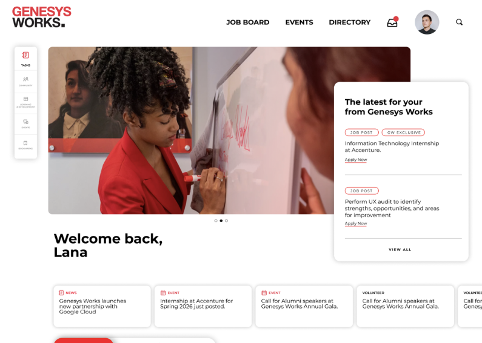

Capital One Design Pro Bono · Genesys Works
Genesys Works Alumni Portal
A relational journey map, prioritized Jobs-to-Be-Done roadmap, and lightweight design system for Genesys Works' in-development Alumni Portal — turning scattered alumni engagement into a clear, buildable product direction.

Overview
The Problem
Genesys Works' strategic goal is a 20% increase in alumni engagement by 2028, but the current alumni experience is fragmented across 4+ communication channels, contact data is difficult for staff to maintain, and alumni's needs shift dramatically the further they get from the program — moving from Young Professional, to New, Emerging, and eventually Established Alumni. A one-size-fits-all portal wasn't going to move the needle.
Our Solution
I helped run discovery interviews with GW staff, site leads, and alumni across every archetype, synthesized the findings into a Jobs-to-Be-Done framework, and translated that into a prioritized feature set, sitemap, and lightweight design system GW's team could hand off to development. We focused on three key pillars:
Content, incentives, and features that adapt to where an alumni actually is — not the same experience for everyone.
One portal in place of 4+ scattered channels, so alumni and staff aren't chasing information across platforms.
A Jobs-to-Be-Done framework with MVP vs. Nice-to-Have calls, so GW has a clear, buildable path forward.
By doing the above, we gave GW's team a validated, prioritized roadmap instead of a blank slate — moving them from open-ended ideas to a clear MVP path.
Research
Internal Stakeholder Synthesis
Before talking to alumni, we aligned with GW staff on what they most wanted to learn. Their top questions going into discovery were about alumni needs, the biggest barriers to building community and ongoing support, and what success would look like a year after launch — tied back to GW's goal of a 20% increase in alumni engagement by 2028.
Alumni & Site Lead Discovery
Using that alignment, we built an interview guide and ran discovery sessions with GW staff, site leads, and alumni representing New, Emerging, and Established archetypes, driven by two core hypotheses:

| Research Objective | Hypothesis |
|---|---|
| Understand which of alumni's shifting priorities and barriers were the highest-leverage problems for the portal to solve. | Alumni whose engagement needs change as they move from Young Professional to Established Alumni will respond best to a portal that adapts its content and incentives by career stage, rather than presenting the same experience to everyone. |
| Identify which existing communication channels and pain points were driving GW's low survey and engagement response rates. | Consolidating GW's fragmented, multi-channel communication into a single personalized portal will increase alumni engagement and response rates. |
Interviewing alumni and site leads directly — rather than relying on staff assumptions alone — was critical for validating which pain points were real versus perceived, and for grounding our Jobs-to-Be-Done framework in what alumni actually said they needed.
Findings & Pain Points

Based on our interviews, I helped synthesize the following key takeaways:
- Young Professionals are focused on landing an internship and building a resume/LinkedIn portfolio.
- New Alumni are nervous about starting college and looking for support and connection.
- Emerging Alumni want career-progression content and ways to network with industry peers.
- Established Alumni want to give back — mentoring, speaking on panels, or connecting with new alumni.
- Contact and communication happen across 4+ channels; GW's Bay Area survey response rate was only ~12% (national rate ~25%).
- Staff reported that contact data, kept in Salesforce, is "super hard to maintain."
- Reengagement is low overall — roughly 700 alumni in the Bay Area, but only ~50 are actively engaged with GW.
- Alumni want events, content, and networking tailored to their industry (e.g., tech, data analytics) rather than generic outreach.
- A vetted, curated job pipeline and access to career certifications (e.g., CompTIA) were repeatedly cited as the most valuable potential features.
- Alumni internship seats are hard to secure because high-school seats are prioritized; most alumni seats actually come from a high schooler excelling in their original internship and being asked to stay on.
- There's no staff capacity dedicated specifically to alumni programming.
Ideation
Concepting & Affinity Mapping
Once research was synthesized, we ran a "Hopes & Fears" workshop and affinity-mapped the raw input into themes — a "one-stop shop" for resources, a LinkedIn-style networking layer tailored to GW, and ways to personalize outreach by career stage. This is where our four Jobs to Be Done first started to take shape.


We organized these themes into four Jobs to Be Done: Launch My Next Career Step, Find My People & Stay Relevant, Get the Right Information Instantly, and Give Back to Genesys Works.
Prioritization & Alumni Sentiment
Alumni sentiment set the stage for feature ideation — direct quotes from our interviews shaped which features we prioritized within each Job to Be Done.
"It's good to see how everyone is doing, what opportunities they've taken, and what they've achieved..."— Alumni Participant
"Genesys Works being able to support me in finding internships or jobs after I graduate from college would be very helpful."— Alumni Participant
"The biggest benefit is the networking events with people who align with your path and the opportunity to connect with them."— Alumni Participant
For each Job to Be Done, we mapped proposed features against alumni archetype, a proposed success metric, and an MVP / Nice-to-Have prioritization:


- A vetted job pipeline, direct access to professional development/certifications, and an "application boost" mechanism using a GW connection.
- Personalized networking by industry/cohort/location, a "success showcase" for alumni to share wins, and a formal mentor program.
- A one-stop partner directory, an integrated event calendar, a staff/site directory, and — as a stretch — an AI-powered chatbot.
- A call-to-donate feature, a volunteering hub (mock interviews, resume reviews), and a partner touchpoint for alumni interested in becoming corporate partners.
Design System & Sitemap
Given our timeline, we built a lightweight "design-system lite" foundation rather than a full component library — a 4px baseline grid, a core typography scale, a stylesheet of buttons/pills/tabs/navigation, and a component mapping showing how those pieces come together on real pages.


This gave us a shared foundation to design consistent screens from, and gave GW a clear, tested information architecture: Home, Alumni (Connections & Community, Directory), Jobs (Job Board, Opportunities), Learning & Development (Courses/Certifications), plus Tasks, Events, and Contact.
Key Screens
Using the design system and sitemap, we designed key styleframes for the portal's most important flows. We landed on this direction for three reasons:
- A "for you" home dashboard balanced with a straightforward way to browse everything — jobs, events, connections — from scratch.
- Reused patterns across national and local site pages so GW's many regional sites can stay visually consistent with less custom design work.
- Recommended and matched content surfaces at the top; full listings and filters live below for deeper browsing.
Home Dashboard

The personalized home dashboard surfaces recommended jobs and events based on the alumni's profile and skills, recent GW news, upcoming events, and a running task list, so an alumni can find what's relevant to them without digging.
Job Board & Career Resources


The job board matches alumni to open corporate-partner roles based on their skills, and shows which of their GW connections work at that company — directly addressing the "application boost" and "find my people" jobs to be done.
Connections & Community

The connections directory lets alumni filter by peers, mentors, or industry, and view GW's staff/site directory — solving the "who do I even contact" pain point that both staff and alumni raised.
Looking Ahead

Given the two-month timeline of a pro bono engagement, we were only able to interview a limited set of alumni and site leads across a handful of GW's sites, and we handed off recommendations and styleframes rather than a shipped, usability-tested product. With more time and access, I'd want to interview alumni across every GW region and every archetype — Young Professional through Established Alumni — and run a real round of usability testing on the actual screens with alumni, to see how the MVP versus Nice-to-Have prioritization holds up once people are actually using it.
Next Steps for GW
- Decide where to use out-of-the-box templates versus fully custom layouts, and align the underlying tech stack across both the Alumni Portal and the newly proposed Partner Portal so the two share as much as possible (partner chat, partner connect, Slack communities, tasks & workflows).
- Use these recommendations as the foundation for full wireframing and information-architecture validation before development starts, so GW avoids building out poorly-considered layouts.
- Prioritize on a Must-Have / Nice-to-Have / Next Release / Year 2+ basis, the same way Partner Portal features like onboarding, position management, and the SOW lifecycle were scoped, so GW's team isn't trying to build everything in one release.
- Use the Concept Card and Effort/Impact (LOE/LOI) frameworks handed off to evaluate any new feature ideas that come up after launch — sorting them into Do Now, Explore More Deeply, Backlog, or Deprioritize based on organizational effort versus impact.
Reflection
A Cross-Business Pro Bono Project
This was genuinely one of the most eye-opening projects I've worked on early in my career. Being trusted to help drive research synthesis and design direction on a project tied to a nonprofit's real strategic goals felt like a big responsibility, and I leaned heavily on my design peers and product peers, as well as our client stakeholders at GW, to make sure we were designing toward what actually mattered to alumni and staff, not just what looked good. The biggest lesson I took away was how much a good prioritization framework — Jobs to Be Done, MVP vs. Nice-to-Have — can turn a huge, open-ended problem into something an organization can actually act on, a lesson I've carried into every project since.